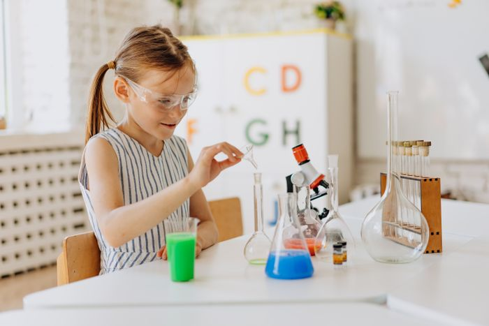
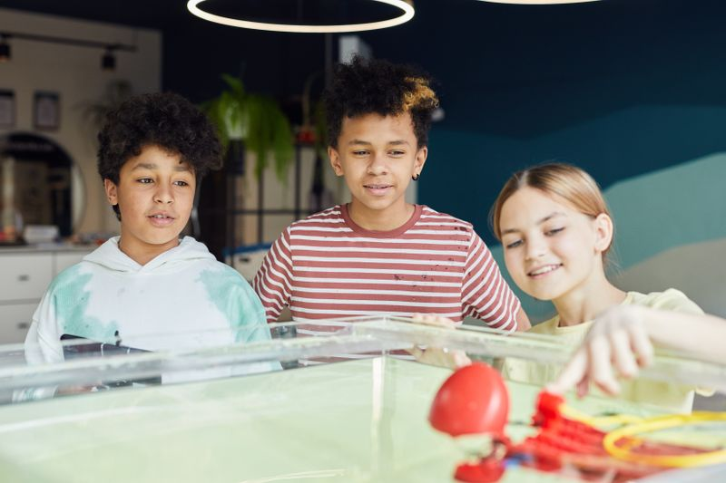

The lab
탁자 셋, 자리 여섯, 싱크대 둘. 창가에는 콩나물 컵이 늘 자랍니다.
One page of the log
관찰 일지는 모눈 한 장, 칸은 다섯 개로 정해져 있습니다.
양배추 지시약 · Week 1
- 질문
- 식초와 비눗물에 넣으면 색이 같을까?
- 예측
- 둘 다 보라색 그대로일 것 같다.
- 한 것
- 지시약 20mL씩 컵 세 개에, 식초 · 비눗물 · 물을 한 숟가락씩.
- 본 것
- 식초는 분홍, 비눗물은 초록, 물은 보라.
- 다음엔
- 레몬즙과 베이킹소다도 넣어 보고 싶다.

What's on each bench
| 도구 | 자리마다 | 쓰는 과정 |
|---|---|---|
| 보안경 · 앞치마 | 한 벌씩, 이름표 | 모든 과정 |
| 현미경 40–400배 | 한 대 | Lab · Research |
| 비커 · 눈금실린더 | 50 · 100 · 250mL | Makers 이상 |
| 돋보기 · 핀셋 | 한 개씩 | Sprouts |
| 건전지 회로 세트 | 둘이 한 세트 | Makers |
Visit the lab
체험 수업은 평일 16:00 또는 토요일 10:00. 전화로 자리를 먼저 확인해 주세요.
- 주소
- {{ADDRESS|서울특별시 강남구 개포로 00, 2층}}
- 시간
- {{HOURS|평일 14:00–20:00 · 토 10:00–17:00}}
- 가는 길
- 대모산입구역 5번 출구에서 걸어서 4분
